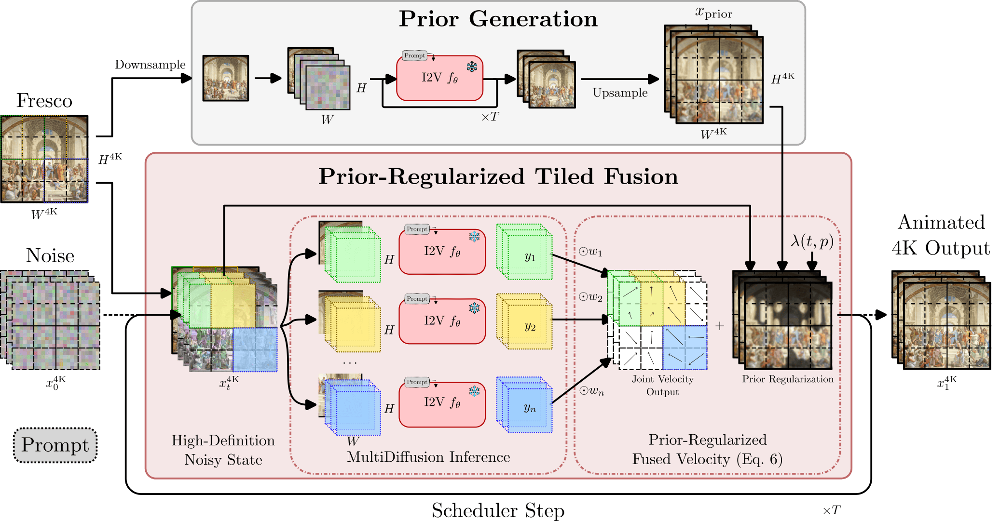
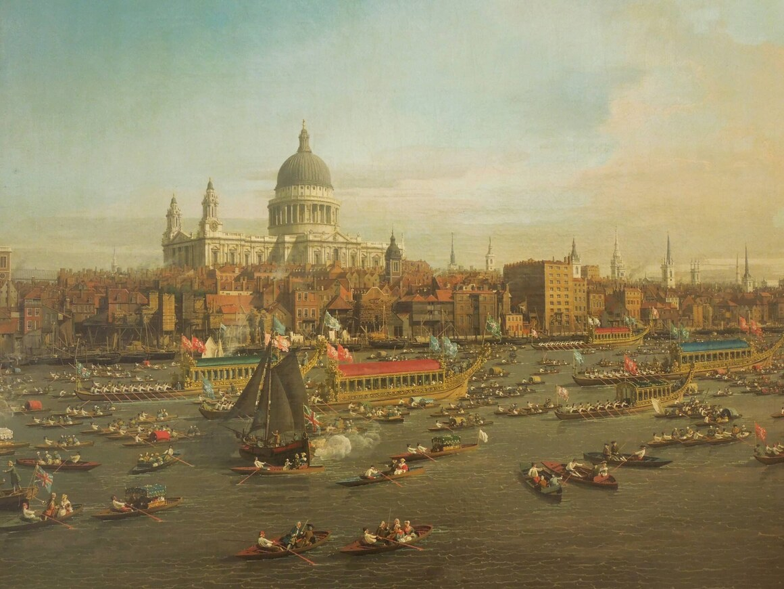

FrescoDiffusion: 4K Image-to-Video with Prior-Regularized Tiled Diffusion
Abstract
Diffusion-based image-to-video models still struggle with ultra-high-resolution inputs such as 4K images. Native-resolution generation loses fine detail, while tiled denoising preserves local structure but can disrupt the global layout—especially in frescoes containing many characters, objects, and distinct scenes.
We introduce FrescoDiffusion, a training-free method for coherent large-format image-to-video generation. A video is first generated at the model’s native resolution, then its upsampled latent trajectory provides a global spatiotemporal prior. During full-resolution generation, per-tile predictions are fused with that reference at every diffusion step through a weighted least-squares objective. A spatial regularization variable additionally provides region-level motion control.
Method

FrescoDiffusion couples local and global generation. A native-resolution teacher video supplies the prior trajectory. Overlapping full-resolution tiles preserve fine structures, while prior regularization keeps their motion and layout globally coherent.
Generation setup. All examples use Wan 2.1 I2V-14B as the video backbone with 81 frames. FrescoDiffusion uses overlapping latent windows and prior guidance at every denoising step; comparison methods share the same input image and prompt.
FrescoArchive
Evaluation dataset
FrescoArchive is our collection of complex, multi-scene artworks for large-format image-to-video research. It exposes failure modes that are easy to miss at native model resolution: cross-scene drift, broken architectural structure, and inconsistent local motion.
371curated images
6,734captioned candidates
- 01
Quality filter. Select high-resolution, aesthetic, safe, and watermark-light images from LAION-2B.
- 02
Find fresco-like scenes. Rank semantically with PerceptionEncoder, then classify with InternVL-3.5.
- 03
Clean and describe. Deduplicate the set and generate detailed captions with Qwen3-VL-32B.
- 04
Curate. Manually retain the 371 strongest image-caption pairs.
Qualitative Comparisons
Each slide uses the same source image and prompt. The six methods are arranged over multiple rows for larger, easier-to-read videos. Browse with the arrows; hover any video to reveal pause, seek, volume, and fullscreen controls.
1 / 4
Controlling the Prior
The paper denotes prior strength with λ. With the source image, prompt, seed, and tiled sampler fixed, these three points show the progression from free tiled denoising toward the global video prior.
Prior influence increases
Prior-strength progression. λ = 0 and λ = 1 are matched high-resolution generations of the same classical fresco. The third video is the native-resolution prior itself: the limiting target approached as λ increases, rather than an additional high-resolution run.
Regional vs. Global Regularization
This is the exact River Thames and St. Paul’s example used in the paper. Both videos start from the same artwork and use λ = 1.5, making the effect of the regional schedule directly comparable.

Matched paper example. The global schedule regularizes the whole canvas uniformly. The regional schedule keeps background regions closer to the prior while allowing activity regions—such as the boats and rowers—to move more freely.
BibTeX
@inproceedings{casellesdupre2026frescodiffusion,
title={{FrescoDiffusion}: 4K Image-to-Video with Prior-Regularized Tiled Diffusion},
author={Hugo Caselles-Dupré and Mathis Koroglu and Guillaume Jeanneret and Arnaud Dapogny and Matthieu Cord},
booktitle={The 2nd Workshop on Multimodal Large Language Models for Unified Comprehension and Generation (MUCG)},
year={2026},
url={https://arxiv.org/abs/2603.17555}
}Acknowledgements
This work has been partially supported by the VISA DEEP chair (grant ANR-20-CHIA-0022), the PostGenAI@Paris cluster (grant ANR-23-IACL-0007; France 2030), and funded by the French National Research Agency (ANR) under the Renaissance project (grant ANR-23-CE23-0023; France 2030).
Computing and storage resources were provided by GENCI at IDRIS under grant 2025-AD011016538 on the Jean Zay H100 partition.